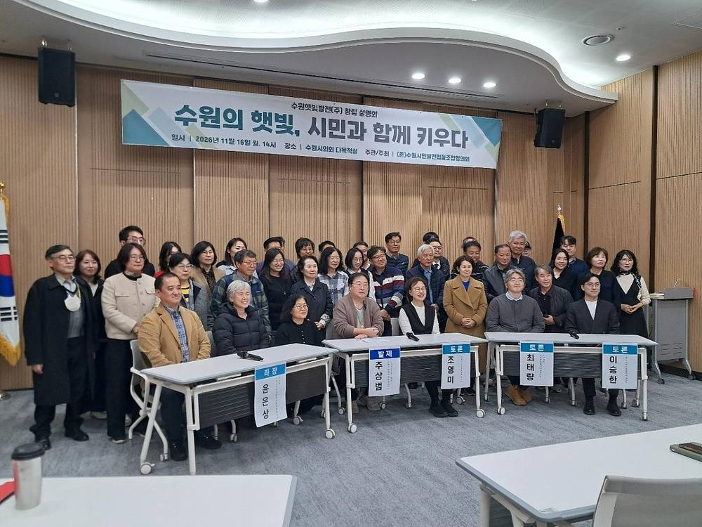

수원햇빛발전 시민펀드, 배당 목표 연 5~8%

수원 공공주차장 20MW 태양광 회사 설명회가 11월 16일 시의회에서 열렸다. 수원도시공사가 45%를 내고 조합·지역기업이 20~30%씩 출자하는 안이다.
수원 도심 공공주차장에 20MW 규모 태양광을 지을 '수원햇빛발전 주식회사'가 시민펀드에 연 5~8% 수준의 배당을 목표로 잡았다. 수원시민햇빛발전사회적협동조합은 11월 16일 오후 수원특례시의회 1층 다목적실에서 이 회사의 창립설명회가 열렸다고 19일 누리집에 알렸다. 조합원과 시민 60여 명이 자리했다.
지분은 수원도시공사가 45%로 가장 많이 갖고, 지역 에너지협동조합과 수원 기업이 각각 20~30%를 나눠 맡는 안이 제시됐다. 시민은 따로 만드는 시민펀드로 들어오는데, 이 펀드는 의결권이 없는 우선주로 모으고 발전 수익을 바탕으로 배당한다. 조합은 공공기관과 시민, 협동조합, 기업이 한 법인 안에서 발전소를 짓는 점을 이 회사의 특징으로 꼽았고, 도심 공공주차장 태양광을 이렇게 추진하는 것은 전국에서 처음이라고 설명했다.
참석자들은 의결권 없는 배당 투자에 그치지 말고 시민이 사업의 주인이라고 느낄 참여 통로를 따로 열어 달라고 요구했다. 재정 안정성을 어떻게 담보하는지, 회사가 생긴 뒤 기존 협동조합 활동이 줄어들지 않는지도 물었다. 설립 전부터 수원도시공사가 논의 자리에 나와야 한다는 의견도 나왔다.
토론에서 조영미 수원에너지협동조합 이사장은 조합의 출자 뜻을 밝히고, 에너지 교육과 지역 복지를 잇는 '도시형 햇빛소득마을'을 만들자고 제안했다. 최태량 공동의집에너지협동조합 사무국장은 대표이사 공모제와 민주적 이사회를 두고, 단계별 증자 때 출자가 늦어지지 않게 재정 대책과 정책금융을 미리 준비하라고 주문했다. 이승한 전주시탄소중립지원센터장은 통합 관리의 장점을 살리면서 담당 부서가 꾸준히 사업을 이어 가야 한다고 짚었다. 조합은 2일 공지에서 수원시와 지역 에너지협동조합들이 2027년 햇빛발전소를 넓히려고 이 회사를 준비했다고 밝힌 바 있다. 조합은 창립 전까지 시민과 충분히 소통하고 공론화 과정을 밟겠다고 했다.
시민에너지 관점
시민펀드가 의결권 없는 우선주로만 모이면 시민은 배당을 받는 투자자에 머문다. 협동조합은 출자액과 상관없이 조합원 한 사람이 한 표를 갖는데, 새 회사에서 그 목소리를 이어 갈 자리는 조합 몫 20~30%다. 그래서 대표이사 공모와 이사회 구성, 시민 참여 통로가 정관에 어떻게 담기는지가 배당률만큼 중요하다. 창립 전 공론화 자리에 수원 시민이 더 많이 나와 이 조항들을 함께 정하자.
출처: 수원시민햇빛발전사회적협동조합 2026-11-19 활동소식 「수원햇빛발전(주) 창립설명회 현장 이야기」 원문 보기
출처: 수원시민햇빛발전사회적협동조합 2026-11-02 공지 「[2026 조합원의날 주간2] 수원햇빛발전(주) 창립설명회 개최」 원문 보기